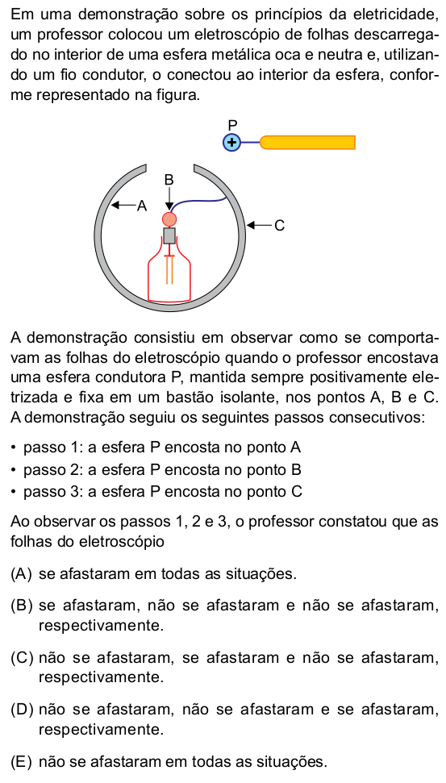

Física 3 - Exercícios e problemas - unidade 1
Questões de revisão: Carga elétrica
Questão 1
a) Quais são as partículas básicas que constituem a matéria?
b) Explique por que um átomo é eletricamente neutro em condições normais.
c) Explique por que, em um átomo, os elétrons são as partículas que orbitam o núcleo, e não os prótons?
Questão 3
a) O que deve acontecer para que um átomo fique com carga \(+ e\)?
b) O que deve acontecer para que um átomo fique com carga \(- 3e \)
Questão 4
a) Cacule a carga elétrica total (em Coulombs) de um ojeto que possui \( 3 \times 10^{12}\) elétrons.
b) Quantos elétrons precisam ser removidos de um corpo neutro para que ele adquira uma carga de \(+4,8 \times 10^{-12}\, C\)
Questão 5 - SIS-UEA-2014

Questões de revisão: Condutores e isolantes
Questão 1
a) Explique, em termos da mobilidade das cargas elétricas, o que diferencia um condutor de um isolante
b) Cite dois exemplos de materiais condutores, e dois exemplos de materiais isolantes.
Questão 2
a) A água pura (água destilada) é um bom condutor de eletricidade? e a água comum (encontrada na natureza) ? Justifique.
b) O ar é um isolante ou um condutor de eletricidade? Justifique sua resposta a partir de uma observação empírica.
Questão 3
Todos os objetos são formados por partículas com carga elétrica (prótons e elétrons). No entanto, a carga líquida de um objeto depende do balanço entre essas cargas. Explique como um objeto pode ter carga líquida nula, positiva ou negativa, utilizando exemplos.
Questões de revisão: Processos de eletrização
Questão 1
a) Explique o que acontece com os elétrons quando dois materiais diferentes são atritados. Por que um corpo fica carregado positivamente e o outro negativamente?
b) Dê dois exemplos práticos de eletrização por atrito e descreva como ocorre a transferência de elétrons em cada caso.
Questão 2
a) Se uma esfera metálica carregada negativamente tocar outra esfera idêntica neutra, qual será a carga final de cada uma? Justifique sua resposta.
b) Duas esferas idênticas tem cargas, respectivamente, \(+10 \,C\) e \(-5\,C\) . Ao tocar essas duas esferas, qual será a carga final de cada uma? Justifique sua resposta.
Questão 3 - SIS-UEA-2018

Questão 4 - SIS-UEA-2016

Questão 5 - SIS-UEA-2014

Questão 6 - SIS-UEA-2019

Questões de revisão: Força elétrica
Questão 1
Imagine que dois objetos com cargas, respectivamente, \(q_1\) e \(q_2\) estão separados por uma distância \(d\).
a) Se \(q_1 > 0\) e \(q_2 > 0\), a força será de atração ou repulsão?
b) Se \(q_1 > 0\) e \(q_2 < 0\), a força será de atração ou repulsão?
c) Se \(q_1 < 0\) e \(q_2 > 0\), a força será de atração ou repulsão?
d) Se \(q_1 < 0\) e \(q_2 < 0\), a força será de atração ou repulsão?
e) O que acontecerá com a força se a carga \(q_1\) for dobrada?
f) O que acontecerá com a força se a carga \(q_2\) for triplicada?
g) O que acontecerá com a força se a distância for dobrada?
h) O que acontecerá com a força se a distância dor triplicada?
Questão 2
Usando apenas ordem de grandeza para os valores necessários (exemplo \(9\times10^{9} \sim 10^{10}\)), compare a força elétrica com a força gravitacional entre um próton e um elétron.
Questão 3 - UEA-SIS-2016

Questão 4 - UEA-SIS-2019